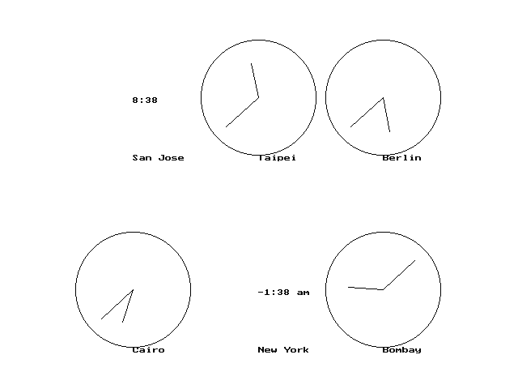

// clocks2.cpp
#include "ccc_win.cpp"
#include "ccc_time.cpp"
class WallClock {
public:
WallClock() {}
WallClock(string city_name,
double hour_diff, Point c, double r);
virtual void draw() const;
/* виртуална функция */
Time get_time() const { return
current_time; }
Point get_center() const
{ return center; }
double get_radius() const
{ return radius; }
private:
string city;
Time current_time;
Point center;
double radius;
};
class AnalogClock : public WallClock {
public:
AnalogClock() {}
AnalogClock(string city_name,
double hour_diff, Point c, double r);
virtual void draw() const;
/* виртуална функция */
private:
void draw_hand(double angle,
double length) const;
};
class DigitalClock : public WallClock {
public:
DigitalClock() {}
DigitalClock(string city_name,
double hour_diff,
Point c,
double r, bool am_pm);
virtual void draw() const;
/* виртуална функция */
private:
bool use_am_pm;
};
const double PI = 3.141592653589793;
string int_to_string(int n)
{ ostringstream outstr;
outstr << n;
return outstr.str();
}
string time_to_string(int hours, int minutes,
bool am_pm)
{ string suffix;
if (am_pm)
{ if (hours < 12) suffix = "am";
else
suffix = "pm";
hours = hours - 12;
if (hours == 0) hours
= 12;
}
string result = int_to_string(hours)
+ ":";
if (minutes < 10) result = result
+ "0";
result = result + int_to_string(minutes);
if (am_pm) result = result + "
" + suffix;
return result;
}
WallClock::WallClock(string city_name,
double hour_diff, Point c, double r)
{ city = city_name;
center = c;
radius = r;
const double SECONDS_PER_HOUR =
60 * 60;
current_time.add_seconds(hour_diff
* SECONDS_PER_HOUR);
}
void WallClock::draw() const
{ Point p = center;
p.move(0, -radius);
cwin << Message(p, city);
}
AnalogClock::AnalogClock(string city_name,
double hour_diff, Point c, double r) : WallClock(city_name, hour_diff,
c, r)
{}
void AnalogClock::draw_hand(double angle,
double length) const
{ double alpha = PI/2 - 6*angle*PI/180;
Point from = get_center();
Point to = from;
to.move(cos(alpha) * get_radius()
* length,
sin(alpha) * get_radius() * length);
cwin << Line(from, to);
}
void AnalogClock::draw() const
{ WallClock::draw(); /* извикване на предефинирана
функция от базовия клас */
cwin << Circle(get_center(),
get_radius());
const double HOUR_HAND = 0.6;
const double MINUTE_HAND = 0.75;
draw_hand(get_time().get_minutes(),
MINUTE_HAND);
draw_hand((get_time().get_hours()
+
get_time().get_minutes()/60.0)*5,
HOUR_HAND);
}
DigitalClock::DigitalClock(string city_name,
double hour_diff, Point c, double r, bool am_pm) : WallClock(city_name,
hour_diff, c, r)
{ use_am_pm = am_pm; }
void DigitalClock::draw() const
{ WallClock::draw(); /* извикване на предефинирана
функция от базовия клас */
string time;
int hours = get_time().get_hours();
int minutes = get_time().get_minutes();
cwin << Message(get_center(),
time_to_string(hours, minutes, use_am_pm));
}
int main()
{ vector<WallClock*> clocks(6);
clocks[0] = new DigitalClock("San
Jose",16,Point(-6.5,5), 3, false);
clocks[1] = new AnalogClock("Taipei",7,
Point(0,5), 3);
clocks[2] = new AnalogClock("Berlin",1,
Point(6.5,5), 3);
clocks[3] = new AnalogClock("Cairo",2,
Point(-6.5,-5), 3);
clocks[4] = new DigitalClock("New
York",19, Point(0,-5), 3, true);
clocks[5] = new AnalogClock("Bombay",4.5,
Point(6.5,-5), 3);
for (int i = 0; i < clocks.size();
i++)
clocks[i]->draw();
/* динамично свързване */
return 0;
}
|  |
Виртуалните функции дават възможност за динамично
свързване на обект и член-функция - ако адресът, записан в clocks[i]
е адрес на обект от тип DigitalClock,
то
clocks[i]->draw() извиква
член-функция draw() на класа
DigitalClock,
а ако clocks[i] съдържа
адрес на обект от тип AnalogClock,
то clocks[i]->draw() извиква
член-функция draw() на класа
AnalogClock.
Това определяне на класа, чиято функция ще се изпълни, се извършва по време
на изпълнение на програмата.